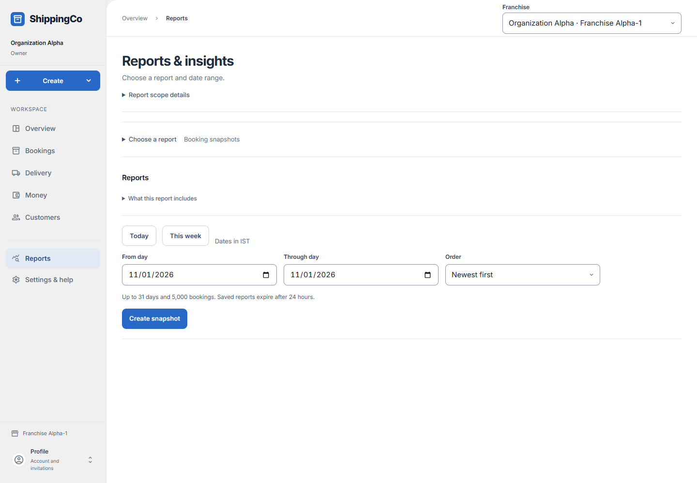

Choose and read a report
What this helps you do
Answer a business question using saved figures and the records behind them.
Before you start
Sign in and choose the correct branch. Your access decides which actions you can use.
Choose a report and save a matching set of figures
- Open Reports in the main navigation. Expand Choose a report to see questions such as How much did we bill?, Which payments are overdue?, How are deliveries doing? and Which bookings make up the figures?. Only reports allowed for your role appear.
- The report choice closes after selection. Reopen Choose a report to switch. Report scope details explains the active branch; it does not grant extra access or change an existing saved snapshot.
- For Booking snapshots, choose Which bookings make up the figures?. Expand What this report includes to read its limits. The report uses original booking charges and net funds applied to those bills; customer advances stay in Money receipts.
- Use Today or This week, or set From day and Through day manually in Indian time. Order chooses Newest first or Oldest first. Choose at most 31 days, then select Create snapshot.
- Read Saved period, capture time and booking count before comparing totals. Billed gross includes tax; Tax exclusive revenue excludes tax; Collections is money applied to those bookings; Outstanding is their remaining balance. Payments applied later can be included up to capture.
- The booking evidence table lists each booking, confirmation time, booked amount, collected amount and outstanding balance. Load more bookings continues the saved list. Download matching CSV exports this same saved snapshot where permitted.
- Costs and due dates are unknown in Booking snapshots. Use Sales and GST for corrections, actual refunds and adjusted balances; this snapshot is not a GST filing report.
- A snapshot holds up to 5,000 bookings and expires after 24 hours. If 20 reports are still active, reuse one or wait for expiry. Retry same snapshot request retries the original uncertain creation; Retry saved report reloads an existing result.
Quick steps
- Open Reports & insights.
- Open Choose a report and pick the question you want to answer.
- Set the dates and other choices shown for that report.
- Create the report. Check its saved period and capture time.
- Open source records to understand a total. Download a matching CSV where allowed.

Current app screen with synthetic review data. Names, references and amounts are examples, not customer records. Select the image to enlarge it.Fields and choices
- Sales and GST: Billed amounts, tax groups and saved financial evidence.
- Booking snapshots: Original booking amounts and linked collections.
- To-Pay ageing: Unpaid balances grouped by how overdue they are.
- Delivery performance: Parcel and route results.
- Messaging and assistant: Message and assistant activity.
- Shipment costs: Recorded costs and contribution.
- Owner summaries: Scheduled summaries and overdue alerts.
- Accountant register: Financial records for the accountant.
- From day / Through day: The first and last date of the report.
- Order: For booking snapshots: newest first or oldest first.
What to check
- Booking snapshots allow up to 31 days and 5,000 bookings. They expire after 24 hours.
- A CSV uses the saved report, not a fresh set of numbers.
- The booking snapshot is not a GST filing report.
- Unknown means the app does not have the needed facts. It does not mean zero.
- You may have permission to view a report without permission to export it.
About this guide
Checked against the web app source on 1 November 2026. Examples are not real business records.